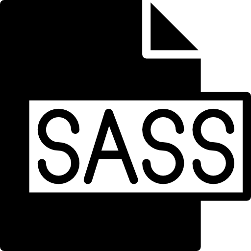
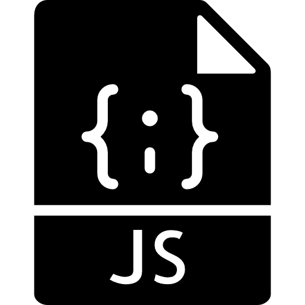

Conocimientos
HTML

Css

Sass
bootstrap

JavaScript
JQuery
Json
API
Git

GitHube

ReactJs

Desarrollador Web Front-End
Me llamo Jonatan Pierini, tengo 33 años, soy de Rosario, Santa Fe - Argentina.
Hace un tiempo empecé con la idea de hacer un cambio rotundo en mi profesión (Abogacía), y comencé a estudiar programación. Si bien el impacto fue fuerte, hoy por hoy estoy convencido de la buena elección que tomé, y más que feliz.
Actualmente me encuentro finalizando la carrera de Desarrollo Web Full-Stack y realizando la carrera de Analista de Sistemas en la Universidad Abierta Interamericana.
Soy una persona proactiva, con grandes proyectos, capaz de trabajar en equipo y bajo presión.
Mi objetivo es continuar desarrollándome en programación, es algo que indudablemente ha cambiado el rumbo en mi vida profesional.
Hoy me encuentro en la búsqueda de un desafío laboral, para seguir creciendo tanto en lo técnico como en lo personal y poder capacitarme en nuevas tecnologías


Español (Nativo)
Ingles (Intermedio)